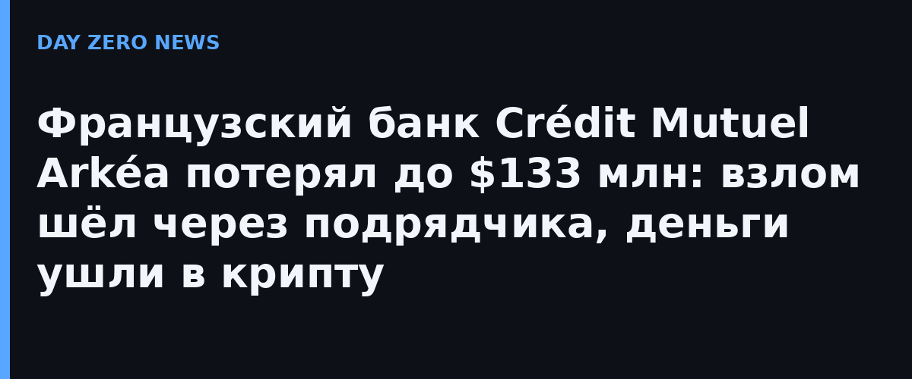

Crédit Mutuel Arkéa — крупная французская банковская группа: 5,8 млн пайщиков и активы на 211,5 млрд евро. 4 ноября банк официально подтвердил кибератаку. По оценке блокчейн-расследователя ZachXBT (это оценка эксперта, сам банк точную сумму не подтвердил), злоумышленники вывели до 118 млн евро (около $133 млн) в стейблкоинах USDC и USDT. Банк подтвердил лишь «порядок величины» и сообщил, что часть средств удалось заблокировать.
По официальным разъяснениям банка, атакующий добрался до сети напрямую через платформу внешнего сервис-провайдера (дочерний банк Fortuneo при этом исключён). Дальше использовался собственный корреспондентский счёт самого Arkéa — не счета клиентов: переводы шли другим банковским организациям с последующим конвертированием в криптовалюту. ZachXBT подсчитал, что из-за задержки с публичным раскрытием до 30 млн долларов успели отмыть до того, как правоохранители ЕС смогли бы их заморозить. Человеческий фактор в банке исключили и назвали происшедшее «софистицированной атакой»; расследование идёт вместе с полицией и судебными властями.
Сам банк заявил, что инцидент «закрыт и контролируется», на активы клиентов он не повлиял — задержались только некоторые переводы. НоArkéa прямо предупреждает о всплеске фишинга: не сообщать коды и данные карт по телефону и в почте, любые подозрительные сообщения перепроверять звонком своему консультанту банка. Универсальное правило для всех, чьи данные хранятся у банков и сервисов: после публичного взлома крупный банк никогда не просит «подтвердить счёт» входящим звонком — это признак мошенников.
Классический удар по цепочке поставок: не сам банк, а его подрядчик оказался дверью внутрь, а дальше сработал внутренний счёт — система, которой обычно доверяют без вопросов. Для отрасли это напоминание, что аудит подрядчиков и контроль межбанковских транзакций — не формальность: убыток измеряется десятками миллионов, а окно между атакой и раскрытием — временем, за которое деньги успевают превратиться в крипту.